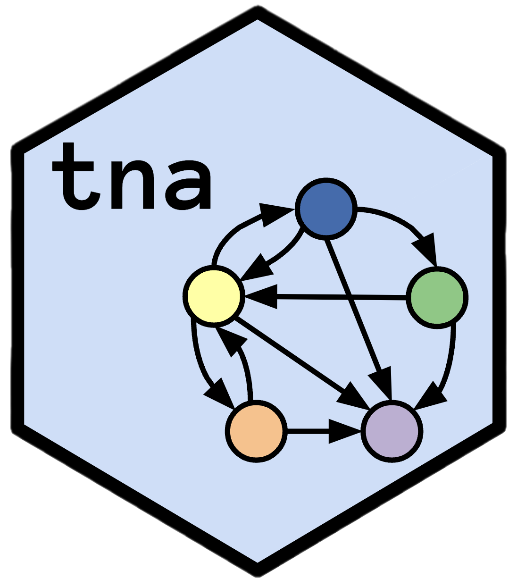
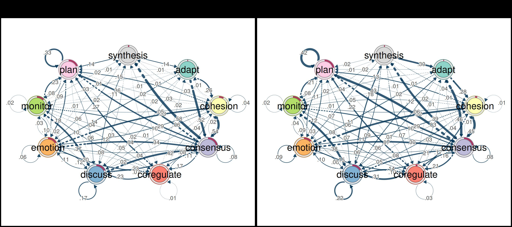
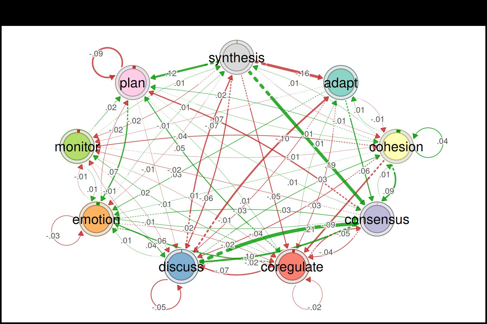
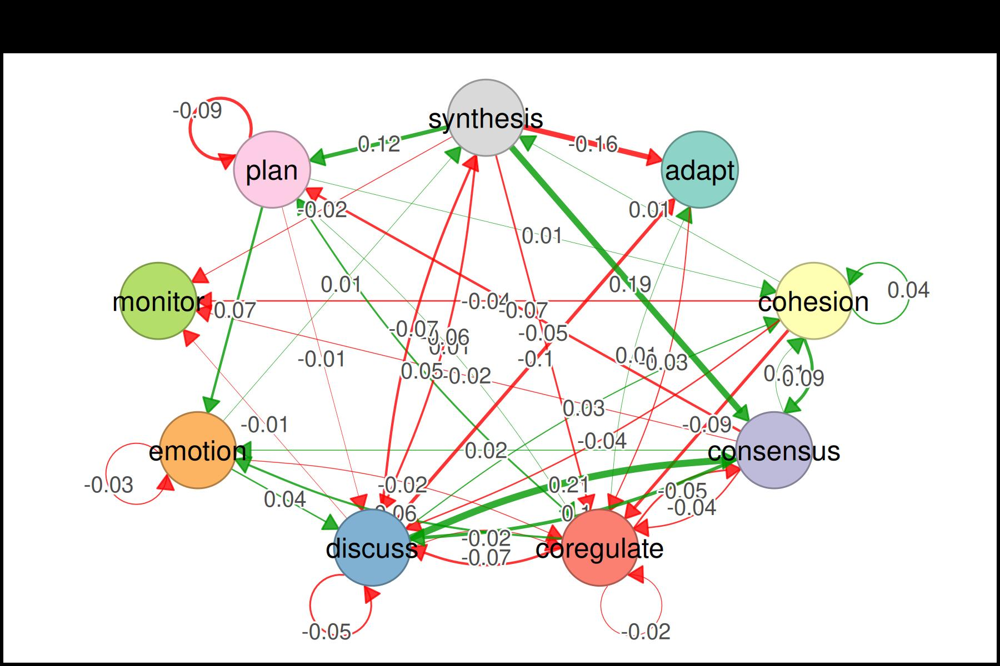
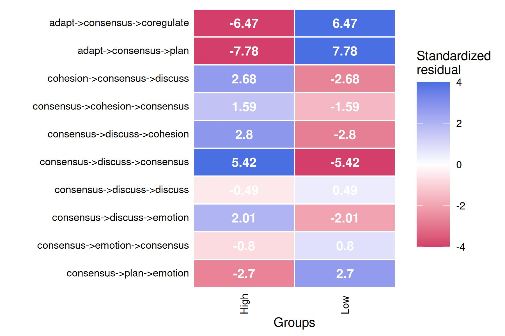
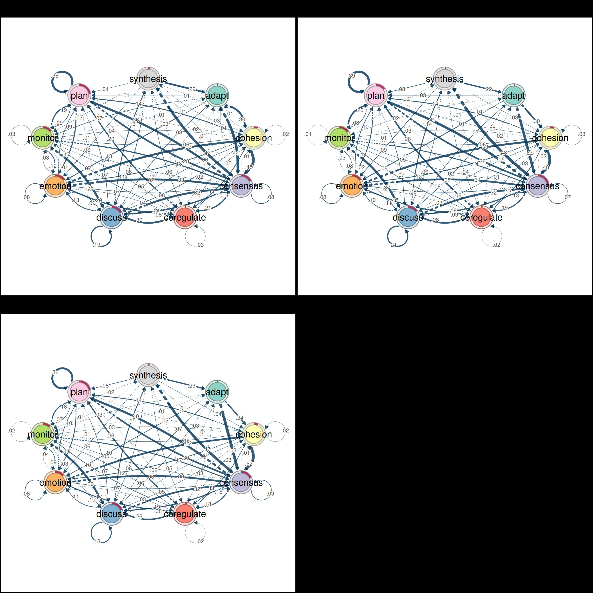
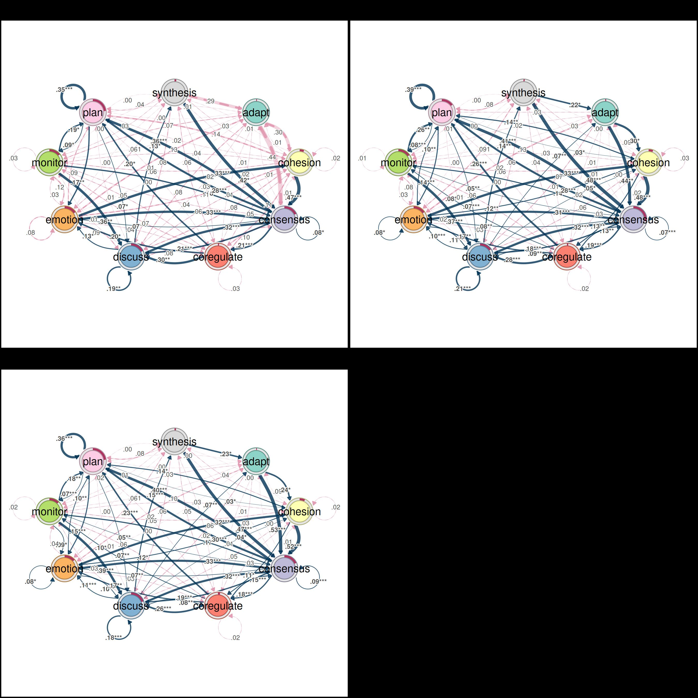
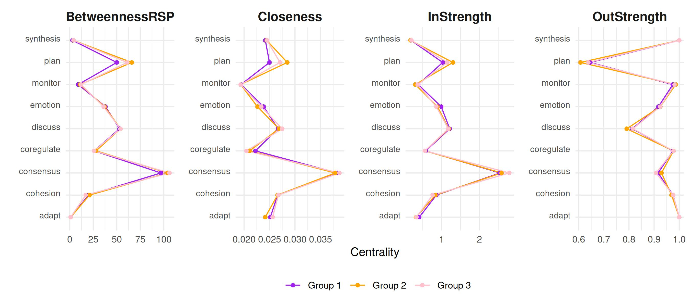
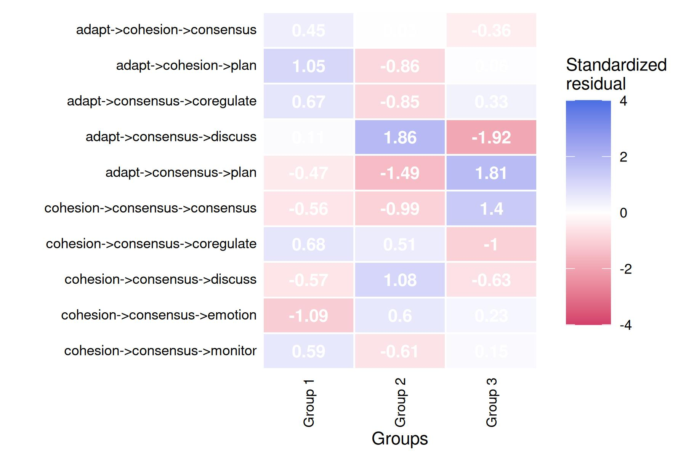

Using grouped sequence data with tna
Source:vignettes/grouped_sequences.Rmd
grouped_sequences.RmdTNA supports the analysis of transition networks constructed from
grouped sequence data. Groups can be defined in several ways, but
mainly: using a pre-existing grouping variable in the data (e.g., a
demographic or experimental condition), or by clustering the sequences
themselves based on their similarity. This vignette demonstrates both
approaches using the group_regulation_long dataset.
First, we load the packages we will use for this example.
Data preparation
We import the data in long format and prepare it for analysis. The
prepare_data() function converts the long-format event log
into wide-format sequences. The unused columns in the dataset are stored
in the metadata of prepared and we can use them later
on.
data("group_regulation_long", package = "tna")
prepared <- prepare_data(group_regulation_long,
actor = "Actor",
action = "Action",
time = "Time")Groups from a pre-existing variable
When the data contains a grouping variable, we can build separate TNA
models for each group directly. Here, the "Achiever" column
in the metadata splits the sequences into two groups (high vs. low
achievers).
layout(t(1:2))
achievers <- group_tna(prepared, group = "Achiever")
plot(achievers)
#> Registered S3 method overwritten by 'cograph':
#> method from
#> plot.tna_bootstrap tna
Comparing groups
The plot_compare() function visualizes the difference
network between the two groups. Green edges and donut segments indicate
that the first group (High achievers) has higher values, while red
indicates the opposite (Low achievers have higher values).
plot_compare(achievers)
Permutation test
A permutation test can be used to assess whether the observed differences between the two groups are statistically significant.
permutation_test_results <- permutation_test(achievers)
plot(permutation_test_results)
Subsequence comparison
We can also compare the frequency of subsequences across groups. Here we look at subsequences of length 3 to 5, keeping only those that appear at least 5 times, and apply FDR correction for multiple comparisons.
subsequence_comparison <- compare_sequences(achievers,
sub = 3:5,
min_freq = 5,
correction = "fdr")
plot(subsequence_comparison, cells = TRUE)
Groups from sequence clustering
When no pre-existing grouping variable is available, we can cluster
the sequences based on their pairwise dissimilarity. The
cluster_sequences().
clustering_results <- cluster_sequences(prepared, k = 3)To choose an appropriate number of clusters, we can plot the silhouette score for different values of k. Higher silhouette values indicate better-separated clusters.
plot(
2:8,
sapply(2:8, \(k) cluster_sequences(prepared, k = k)$silhouette),
type = "b",
xlab = "Number of clusters (k)",
ylab = "Silhouette",
xaxt = "n"
)Once we have chosen k, we build the grouped TNA model using the cluster assignments.
tna_model_clus <- group_tna(prepared, group = clustering_results$assignments)
Summarizing the cluster-specific models
We can summarize the cluster-specific models to compare their overall characteristics.
summary(tna_model_clus) |>
gt() |>
fmt_number(decimals = 2)| metric | Group 1 | Group 2 | Group 3 |
|---|---|---|---|
| Node Count | 9.00 | 9.00 | 9.00 |
| Edge Count | 78.00 | 77.00 | 78.00 |
| Network Density | 1.00 | 1.00 | 1.00 |
| Mean Distance | 0.04 | 0.05 | 0.05 |
| Mean Out-Strength | 1.00 | 1.00 | 1.00 |
| SD Out-Strength | 0.75 | 0.80 | 0.84 |
| Mean In-Strength | 1.00 | 1.00 | 1.00 |
| SD In-Strength | 0.00 | 0.00 | 0.00 |
| Mean Out-Degree | 8.67 | 8.56 | 8.67 |
| SD Out-Degree | 0.71 | 0.73 | 0.71 |
| Centralization (Out-Degree) | 0.02 | 0.03 | 0.02 |
| Centralization (In-Degree) | 0.02 | 0.03 | 0.02 |
| Reciprocity | 0.99 | 0.97 | 0.99 |
Initial probabilities show which states are most common at the start of the sequences in each cluster.
mat <- sapply(
tna_model_clus,
\(x) setNames(x$inits, x$labels)
)
df <- data.frame(label = rownames(mat), mat, row.names = NULL)
gt(df, rowname_col = "label") |> fmt_percent(columns = -label)| Group.1 | Group.2 | Group.3 | |
|---|---|---|---|
| adapt | 1.02% | 1.41% | 0.99% |
| cohesion | 5.73% | 5.78% | 6.92% |
| consensus | 17.96% | 27.50% | 18.18% |
| coregulate | 1.53% | 1.69% | 2.77% |
| discuss | 17.83% | 15.66% | 19.76% |
| emotion | 15.67% | 15.51% | 13.83% |
| monitor | 14.52% | 15.66% | 12.45% |
| plan | 23.44% | 15.23% | 23.12% |
| synthesis | 2.29% | 1.55% | 1.98% |
The full transition probability matrices can also be inspected for each cluster.
transitions <- lapply(
tna_model_clus,
function(x) {
x$weights |>
data.frame() |>
rownames_to_column("From\\To") |>
gt() |>
fmt_percent()
}
)
transitions[[1]] |> tab_header(title = names(tna_model_clus)[1])| Group 1 | |||||||||
| From\To | adapt | cohesion | consensus | coregulate | discuss | emotion | monitor | plan | synthesis |
|---|---|---|---|---|---|---|---|---|---|
| adapt | 0.00% | 30.34% | 43.82% | 2.25% | 2.25% | 13.48% | 6.74% | 1.12% | 0.00% |
| cohesion | 0.70% | 2.46% | 47.37% | 11.23% | 8.42% | 11.23% | 3.86% | 14.04% | 0.70% |
| consensus | 0.96% | 1.17% | 8.40% | 21.04% | 20.83% | 6.59% | 4.14% | 35.60% | 1.28% |
| coregulate | 1.44% | 5.05% | 10.47% | 2.53% | 30.32% | 20.22% | 6.86% | 20.22% | 2.89% |
| discuss | 7.65% | 5.81% | 31.80% | 7.65% | 18.65% | 12.54% | 1.38% | 1.07% | 13.46% |
| emotion | 0.20% | 33.47% | 32.86% | 3.63% | 9.07% | 8.27% | 3.43% | 8.67% | 0.40% |
| monitor | 0.73% | 5.84% | 17.88% | 5.47% | 36.50% | 12.04% | 2.55% | 18.61% | 0.36% |
| plan | 0.12% | 1.88% | 27.85% | 1.29% | 6.70% | 17.39% | 9.05% | 35.49% | 0.24% |
| synthesis | 29.25% | 2.83% | 42.45% | 5.66% | 7.55% | 5.66% | 2.83% | 3.77% | 0.00% |
transitions[[2]] |> tab_header(title = names(tna_model_clus)[2])| Group 2 | |||||||||
| From\To | adapt | cohesion | consensus | coregulate | discuss | emotion | monitor | plan | synthesis |
|---|---|---|---|---|---|---|---|---|---|
| adapt | 0.00% | 29.56% | 43.84% | 1.48% | 6.90% | 13.30% | 1.97% | 2.96% | 0.00% |
| cohesion | 0.28% | 3.05% | 48.40% | 12.62% | 6.24% | 11.65% | 3.05% | 14.29% | 0.42% |
| consensus | 0.39% | 1.70% | 7.07% | 18.85% | 17.84% | 7.72% | 4.71% | 41.06% | 0.66% |
| coregulate | 2.04% | 3.24% | 12.95% | 2.28% | 27.70% | 16.79% | 7.79% | 25.78% | 1.44% |
| discuss | 6.96% | 5.05% | 31.85% | 8.75% | 20.89% | 9.86% | 1.85% | 1.11% | 13.68% |
| emotion | 0.43% | 32.90% | 30.91% | 3.38% | 10.91% | 7.53% | 3.20% | 10.48% | 0.26% |
| monitor | 1.05% | 5.62% | 14.06% | 5.80% | 36.91% | 7.56% | 1.41% | 26.19% | 1.41% |
| plan | 0.00% | 2.61% | 28.33% | 1.86% | 6.66% | 13.59% | 7.52% | 39.28% | 0.15% |
| synthesis | 21.51% | 3.19% | 48.21% | 3.59% | 5.98% | 8.76% | 0.40% | 8.37% | 0.00% |
transitions[[3]] |> tab_header(title = names(tna_model_clus)[3])| Group 3 | |||||||||
| From\To | adapt | cohesion | consensus | coregulate | discuss | emotion | monitor | plan | synthesis |
|---|---|---|---|---|---|---|---|---|---|
| adapt | 0.00% | 23.96% | 53.00% | 2.76% | 6.45% | 10.14% | 3.23% | 0.46% | 0.00% |
| cohesion | 0.15% | 2.47% | 52.25% | 11.47% | 4.64% | 11.61% | 3.34% | 13.93% | 0.15% |
| consensus | 0.39% | 1.39% | 9.18% | 17.93% | 19.01% | 7.07% | 4.79% | 39.55% | 0.68% |
| coregulate | 1.28% | 3.49% | 14.90% | 2.33% | 26.08% | 16.65% | 10.01% | 23.28% | 1.98% |
| discuss | 7.11% | 4.06% | 32.50% | 8.42% | 18.46% | 10.51% | 2.93% | 1.25% | 14.76% |
| emotion | 0.08% | 31.79% | 32.80% | 3.37% | 9.95% | 7.59% | 4.13% | 10.03% | 0.25% |
| monitor | 1.36% | 5.42% | 16.78% | 5.93% | 38.64% | 9.15% | 1.86% | 18.47% | 2.37% |
| plan | 0.19% | 2.63% | 30.15% | 1.72% | 6.95% | 14.92% | 7.10% | 36.15% | 0.19% |
| synthesis | 23.05% | 3.73% | 46.78% | 4.75% | 6.10% | 6.10% | 1.36% | 8.14% | 0.00% |
Pruning with bootstrap
Just like ordinary TNA models, we can retain only the statistically robust edges.
cluster_boot <- bootstrap(tna_model_clus)
Centrality measures
Centrality measures can be computed for each cluster to identify which states play central roles in each group’s transition dynamics.
centrality_measures <- c(
"BetweennessRSP",
"Closeness",
"InStrength",
"OutStrength"
)
centralities_per_cluster <- centralities(
tna_model_clus,
measures = centrality_measures
)
plot(
centralities_per_cluster, ncol = 4,
colors = c("purple", "orange", "pink")
)
Subsequence comparison across clusters
Finally, we can compare subsequence frequencies across the clusters, just as we did for the pre-existing groups above.
subsequence_comparison <- compare_sequences(tna_model_clus, sub = 3:5, min_freq = 5, correction = "fdr")
plot(subsequence_comparison, cells = TRUE)